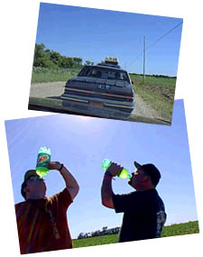
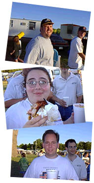
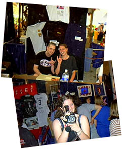
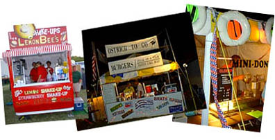

|
 |
 |
| Cornerstone: Welcome!
Day 1: The Arrival!
It's more than a music party -- Tucked behind the underground tent is Cornerstone's ArtRageous and Imaginarium exhibits. Authors, painters, and others of a creative bent can enjoy conferences, discussion, and great coffee. The midnight film festival was cool, too...
So much music, so little time... Sob! Here's a peek at some of the cool stuff I stumbled across over the course of the festival. Some oldies and some fresh stuff -- no matter what the genre, it's hot stuff.
Follow the adventures of Squeaky the Duck on his adventures at the fest. From his near-death experience at the hands of Kevin131 to a DC Talk sighting, he's been almost everywhere.
Well, T-shirts, too. Cornerstone is a great place to find a variety of wacky hairstyles, and most of the owners are good natured sorts who're quite willing to offer their coifs for a good cause -- this page, for one!
What do you get when you put a bunch of music-obsessed usenet junkies in one place? Vibrating hairrushes. That's what. The fourth annual RMC Cornerstone picnic is here, captured in bits and bytes for all of posterity...
Whether it's beating the heat, finding munchies, or selecting that perfect camping site, there's someone who's been through it and has some words of wisdom to offer. Recorded here for posterity are essential Cornerstone survival skills.
|
Cornerstone, ho! After more bopping around the backwaters of Bushnell, We spotted Cornerstone Farm in the distance. Driving into the farm, we merged into the couple-dozen-car-long line creeping towards the registration tent. "Well," said Kellen, "At least there's not dust..." Indeed. Last year, heat and thousands of stomping feet had turned the farm into a dustbowl; this year, the organizers wet down the gravel-and-dirt paths to keep things down. Very nice! While we waited, we grinned and chatted and mingled with other fest-goers strolling up and down the road. We passed two guys walking down the dirt road, Big Mouth bottles of Mountain Dew in hand. Asked them if I could get a photo of them: "Well, can we do the Dew?"
"Of course." Click. Once in, we spent some time wandering around, soaking in the atmosphere, and getting our bearings. Never underestimate the value of having a map handy -- the official C'stone Guide not only listed all the groups and concert schedules, it told where to find them in the sprawl of tents, stages, and exhibit halls. Strange, though, was the noise. Or rather, the lack of it! Crowds of fest goers milled, exploring and laughing and buying slurpees and the linke, but music was conspicuously absent. Come to find out, the power consumed by the festival had blown out Bushnell's power station. Wow! Nobody seemed to mind, excepte the ice cream vendors; a twenty-thousand person party generates its own fun, music or no. Jason and I hooked up with our friend Ben from Kansas, who'd arrived early and set up a campsite. Ben and his friends had driven up a van and strapped a mattress to the roof... Probably bad if rain comes... After talking for a while, I wandered off to explore! En route to the ice cream vendor to get a great deal on some almost-melting popsicles, I ran into a few old net friends. Ed Rock, Bev White, and Matt Laswell of rec.music.christian were all there! We caught up, chatted, and stared in awe at the monstrous pork chop Bev had obtained from one of the numerous booths scattered around the fest grounds. Hooked up with a few other RMC folks and discussed the official picnic that would be held Friday; we chatted about the enormity of the fest when measured against Bushnell's population. During Cornerstone week, the entire town blooms garage sales and 'Welcome to Bushnell!' signs. The potential pool of sale hunters is greater by a factor of ten, after all... There were even special Cornerstone editions of the local newspapers, and the chamber of commerce had set up a booth at the fest to welcome everyone. Wow. By that time, the music was back and the power was on. I drifted in and out of a couple concerts in the big tents, but most of the groups I was interested in hitting were scheduled for later in the week. I swung by the exhibit tents to check out the merchandise... There, bands had set up booths to hawk their CDs and hang out between sets, t-shirts and books and jewelry were on sale, and a couple hundred fest goers milled around looking for fun ways to blow cash. While I was there I hooked up with the members of Aleixa -- a hip industrial-dance group whose Honey Lake CD has long been one of my favorites. They posed with Squeaky the Duck, and we chatted a bit about their upcoming CD. See the Squeaky Files page for a peek at the photo shoot... Further exploring led me to none other than synthpop virtuoso Joey Belville! Called the Nicest Guy in Christian Music, Joey had emailed back and forth with me a number of times. He hung out for a while near his booth and we chatted for a while -- it was a lot of fun and I snagged a couple cool Echoing Green stickers to tide me over 'til the release of his new CD. Woo woo! More random concerts followed, and as the evening turned into the night, Jason and I cruised around, grabbed some subs for a late snack, and headed back to the motel. Cornerstone had begun!  |
|
|
|
|